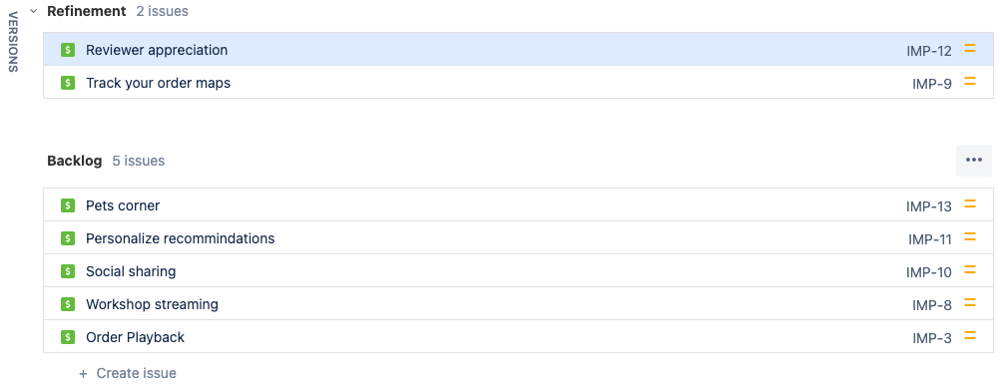
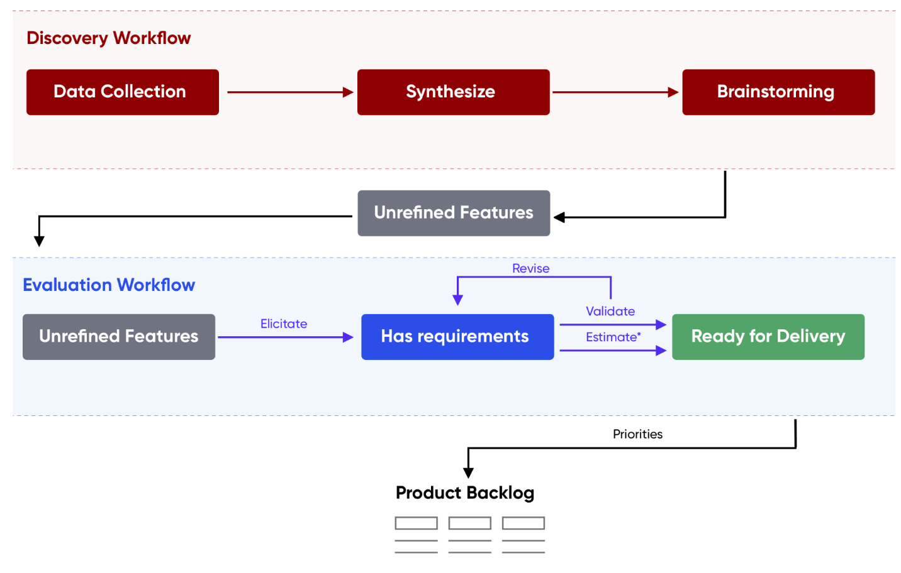
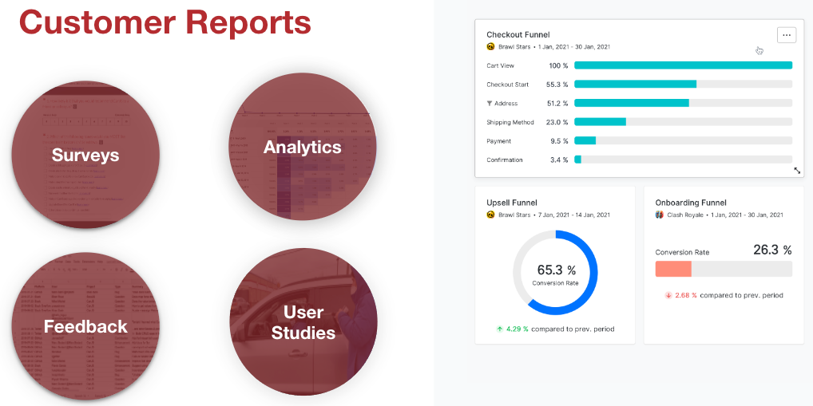

Ideas page
Learn how to add feature ideas to the ideas backlog.
Overview
The ideas backlog is a collection of rough ideas sorted by expected product value.

We will discuss how to manage the Ideas Backlog, including:
How to source ideas to add to the Ideas Backlog
What to include when writing up an initiative for the Ideas Backlog
How and when to prioritize the ideas backlog
For the exercise, you will pick an idea, write it up, and add it to the ideas backlog.
The following is the Google Slides presentation for this material:
What is the Ideas Backlog?
The Ideas Backlog is a list of initiatives with the idea status. The ideas are not fully refined, and therefore can not be estimated or accurately prioritized. However, this list should be prioritized by which ideas are anticipated to create the most value. The highest priority initiatives should be at the top and expected to be further developed and moved into Refinement.
Sourcing ideas
Initiatives in the Ideas Backlog are just ideas. Anyone can add them at any time. However, they would ideally be sourced in-part through a Discovery Workflow.

The discovery workflow is a process that looks at:
- Analytics
- Customer feedback
- Competitor research
- User studies
... and synthesizes the quantitative and qualitative data into a picture for the team to think about and brainstorm.

The discovery workflow is out-of-scope for this training. If you’d like to learn more, please vote for the Product Discovery Process training.
While a discovery workflow ideally plays a part in sourcing ideas, we believe that anyone should be able to contribute initiative ideas at any time.
Writing Up Initiative Ideas
While ideas can be created at any time, by anyone. In order to have a fruitful conversation around which ideas should be prioritized and moved into Refinement, it’s helpful to have the value proposition detailed in the initiative.
For this training, we will be using a promotion initiative as an example. We will develop the promotion initiative from idea to ready for development.
The following is a completed idea initiative:
Promotions
Promotions can have a large impact on customer purchasing decisions. We should create a promotion that would help to increase sales and utilize a Marketing Campaign to advertise the offer.
Problem
We need to provide customers with an incentive to visit Itsy Bitsy and make purchases.
Impact
We hope to increase our revenue by 2x the amount spent on Marketing ads.
- Value - We expect to see an increase in revenue of $100K as a result of the promotion code Marketing Campaign.
- Value confidence - 50%
Notice there are 4 parts:
- A short description
- A problem statement
- An impact statement
- Detail around the desired value and value confidence
Writing up the Description
A description should be a brief summary of what you are trying to do. Ideally, it wouldn’t provide too much in the way of a solution or details. Someone should be able to read it and quickly understand what this initiative is about.
Writing up the Problem
The problem statement should be written from the business’s or customer’s viewpoint. Are you trying to make their checkout experience faster or easier to understand, then write that.
Writing up the Impact
What would you like this initiative to achieve? Think outcomes, think KPIs! Do you want to improve conversions by some amount? Then write that.
It’s important to avoid talking about specific features when writing up the impact.
Writing up the Value and Value Confidence
The value is how much value you think this initiative will produce after it’s completed, per quarter. The value confidence is how confident you are about achieving this.
Perhaps you think a one-click-checkout will improve conversions 3%. How much revenue will that create per quarter? How confident are you that the idea will achieve that conversion improvement?
Prioritizing the ideas backlog
The ideas backlog should be prioritized by the initiatives that have the highest expected value.
This prioritization should ideally happen once a sprint with stakeholders, the product manager, and the program manager. Often, prioritization happens at the end of program sprint planning meetings. Program sprint meetings will be detailed in the Management part of the training.
For now, refinement is as simple as sorting the “Backlog” below with the most valuable initiatives at the top.
There are many prioritization schemes. We will discuss these more in the Prioritization page.
Moving initiatives into Refinement
If the team responsible for scoping initiatives has capacity, then initiatives can be moved into the Refinement status. Make sure to assign the person responsible for scoping the initiative.
For a product that is already released, a product manager might take on one or two initiatives every sprint (assuming that sprints are used and sprints are 2 weeks). Often, a product manager might be working through several initiatives at once as initiatives might take anywhere from 1 to 6 weeks to get ready for development.
We will go into more detail on how to manage the overall continuous exploration process in the Management part of the training.
Exercise
In this exercise, you will brainstorm ideas to enhance Itsy Bitsy, create initiatives, prioritize them, and then move them into refinement.
Step 1: Brainstorming
Think of a few enhancements for Itsy Bitsy that you think will result in more customer and business value. If you are having trouble coming up with some, you can see ideas in the list below:
eCommerce initiative ideas
Personalized recommendations: Use data analysis and machine learning algorithms to suggest products to customers based on their past purchase history or browsing behavior.
Social proof: Include customer reviews and ratings to build trust with potential customers and encourage them to make a purchase.
Upselling and cross-selling: Offer complementary products or upgrade options to customers as they shop, to encourage them to spend more.
Wishlist and save for later: Give customers the ability to save items for future purchases, which can help drive repeat visits and sales.
Abandoned cart recovery: Send targeted emails to customers who leave items in their cart without completing their purchase, with incentives to encourage them to return and complete the transaction.
Loyalty programs: Reward repeat customers with exclusive discounts, free shipping, or other incentives to encourage them to keep coming back.
Live chat support: Provide real-time customer service and support to help customers with any questions or concerns they may have.
Personalization: Use data to customize the shopping experience for each customer, such as showing products in their preferred size or color, or tailoring promotions based on their past behavior.
Mobile optimization: Ensure that your site is mobile-friendly, with a responsive design that works well on all devices, to reach customers who prefer to shop on their smartphones or tablets.
Easy checkout process: Streamline the checkout process as much as possible, with features like saved payment information and one-click checkout, to reduce the likelihood of customers abandoning their cart at checkout.
Before the team starts creating their initiatives, make sure to share your ideas to ensure there are no duplicates. If there are duplicates, try to have those people pick a new idea.
Step 2: Create Initiatives
The team should create their initiative in the “team” Jira instance. They should write it up like the promotion example above.
Step 3: Prioritize Initiatives
Once everyone is done with their initiatives, review them as a team. Make sure that each initiative’s customer problem and impact is clear. Decide as a group the value and value confidence.
Once all initiatives have been valued as a group, sort by VALUE * CONFIDENCE.
Step 4: Move initiatives to Refined
The business is committing to your ideas. Move them into Refined and lets move on to the next step of the training!